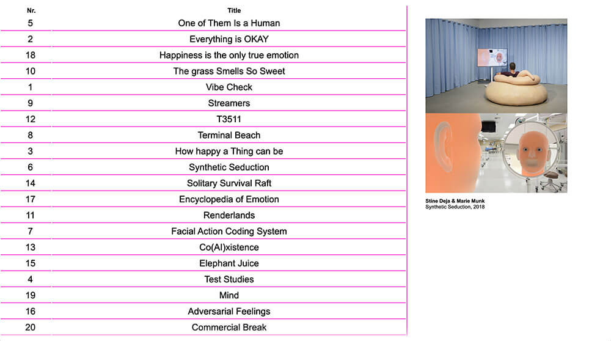
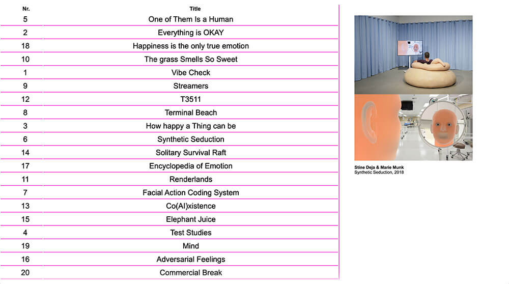

From Poster To Web
< Real Feelings >
< Real Feelings >
- 2020
- Screen Design Layout : Remake-project
- Merz-Akademie WS
This project is “making webpage from the original poster”.
So using arrow graphic, which is the attractive point of the poster, an archiving website of exhibition < Real Feelings > has been made. You can find its primary color and sub colors easily and follow the arrows to various artworks of the exhibition.